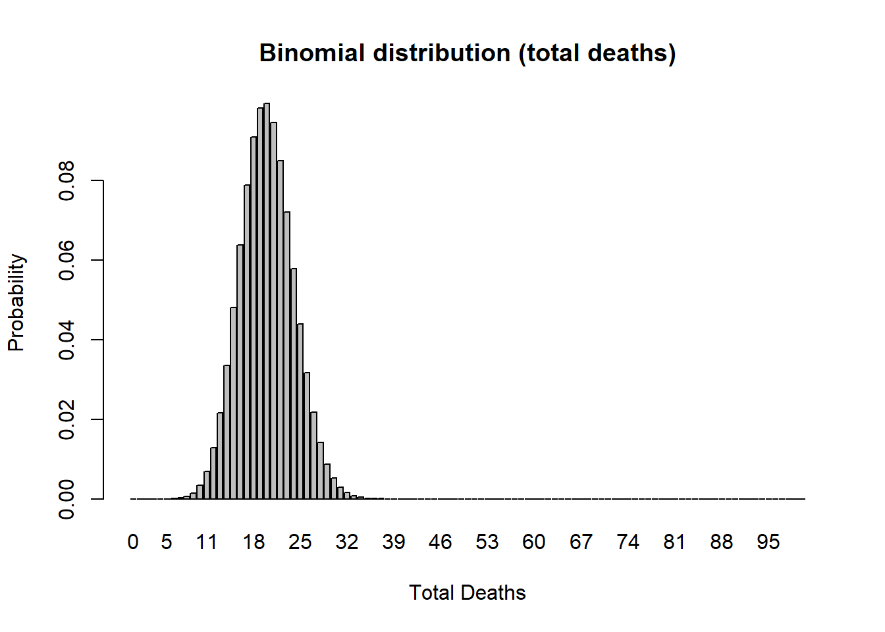
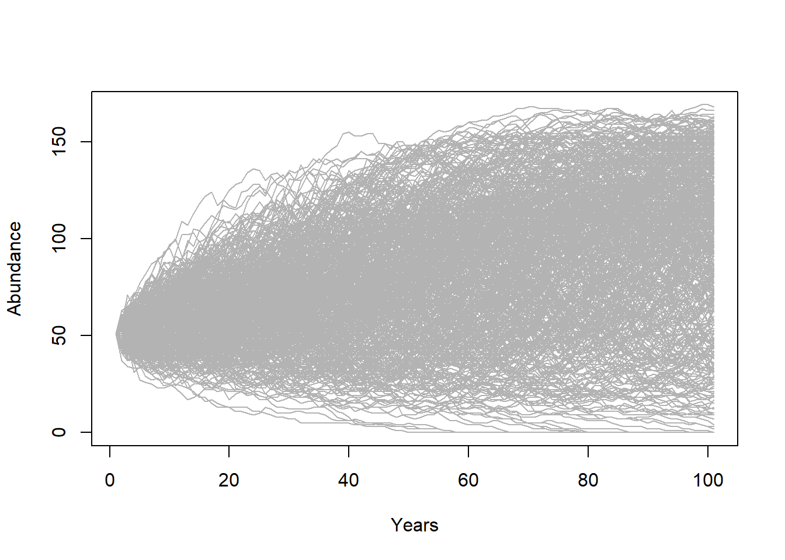

Guest lecture, PVA basics
NRES 421/621
Mar 27, 2017
Population Viability Analysis (PVA)
For the next three class periods, we will explore the use of population models to address conservation questions– a process known as population viability analysis (PVA)
PVA is essentially a set of practical approaches to problem-solving in conservation, and wildlife management via creative application of demographic theory, simulation models and statistics.
As much as possible we will use hands-on activities to explore the fundamentals of PVA. We will use InsightMaker- a free web-based systems modeling tool for running simulation models.
First we will build a PVA for the grizzly bears of Yellowstone National Park!

We will end this mini-course by building a PVA for the loggerhead turtle, Caretta caretta, which is based on a paper by Crowder et al 1994.
But even before any of that, let’s review some basic population ecology theory and mathematics which are the foundation of PVA!
What is a population?
From Krebs (1972):
“A group of organisms of the same species occupying a particular space at a particular time, with the potential to breed with each other”
From Cole (1957):
“A biological unit at the level of ecological integration where it is meaningful to speak of birth rate, death rate, sex ratios, and age structure in describing properties or parameters of the unit.”
From Gotelli (1998):
“A group of plants, animals, or other organisms, all of the same species, that live together and reproduce.”
From NOAA website:
“a group of individuals of the same species living in the same area at the same time and sharing a common gene pool; a group of potentially interbreeding organisms in a geographic area”
Defining a population is not always straightforward…. Spatial boundaries defining populations sometimes are easily defined, but more typically are vague and difficult to determine.
Population size, or abundance, is often represented as \(N\), and is the most basic measurement of a wild population.
Exponential growth: the fundamental principle of population ecology

Giant puffballs produce 7 trillion offspring in one reproductive event.
… If all of those individuals reached adulthood, the descendants from just two parent puffballs would weigh more than the entire planet in two generations!
The reason? Populations grow geometrically, in a process called exponential growth. This is the foundational concept of population ecology, and this simple model has enormous resonance across all of ecology and evolution.
Mathematics and Ecology
“Mathematics seems to endow one with a new sense.”
- Charles Darwin
“Like most mathematicians, he takes the hopeful biologist to the edge of the pond, points out that a good swim will help his work, and then pushes him in and leaves him to drown.”
- Charles Elton, in reference to a work by Alfred Lotka

“The importance of the method is this: if we know certain variables, mostly desired by ecologists and in some cases already determined by them, we can predict certain results which would not normally be predictable or even expected by ecologists. The stage of verification of these mathematical predictions has hardly begun; but their importance cannot be under-estimated.”
- Charles Elton
Nomenclature for Population Ecology
First of all, we need a symbol to represent population size, or abundance. This is \(N\), for the \(N\)umber of individuals!
\(\Delta N\) represents the change in population size, \({N_{t+1}}-{N_t}\)
The famous “BIDE” equation is a way to break down \(\Delta N\) into components.

\(\Delta N = B + I - D - E \qquad \text{(Eq. 1)}\)
where \(B\) represents the number of births, \(I\) reprents the number of immigrants, \(D\) represents the number of deaths, and \(E\) represents the number of emigrants.
If we ignore immigration and emigration, then the BIDE equation simplifies to:
\(\Delta N = B - D \qquad \text{(Eq. 2)}\)
Now let’s focus on \(B\) and \(D\). The important thing to recognize is that the number of births and deaths in a population is not constant.
What does the number of births depend on?
What is more likely to be constant is the per-capita rate of producing offspring, or dying. Does this make sense? These per-capita rates are often expressed as lower case letters. So \(b\) represents per-capita births, and \(d\) represents per-capita deaths.
\(b = \frac {B_t}{N_t} \qquad \text{(Eq. 3)}\)
–or–
\(B_t = b \cdot N_t\)
The letter \(t\) of course represents time, which could be years, or minutes, or decades, or whatever! So the above equation could be described as follows: “the number of births at a given time is equal to the per-capita birth rate times the total population size at that time”
Similarly,
\(D_t = d \cdot N_t \qquad \text{(Eq. 4)}\)
Okay, we’re almost there.
If \(\Delta N = B - D \qquad \text{(Eq. 5)}\)
then
\(\Delta N = b \cdot N_t - d \cdot N_t\qquad \text{(Eq. 6)}\)
which is equal to
\(\Delta N = (b - d) \cdot N_t \qquad \text{(Eq. 7)}\)
which could also be written:
\(\Delta N = r \cdot N_t\qquad \text{(Eq. 8)}\)
Where \(r\) represents the difference between births and deaths. If \(r\) is positive, then births are greater than deaths and the population grows. If \(r\) is negative then deaths exceed births and the population declines.
We can use calculus notation to consider the instantaneous change in population size:
\(\frac{\partial N}{\partial t} = r \cdot N \qquad \text{(Eq. 9)}\)
This simple formula represents exponential growth and is probably the most fundamental equation of population ecology.
We will have time to explore this model in a few minutes!
A couple more quick notes:
The greek symbol lambda (\(\lambda\)), represents the finite rate of growth, or \(\frac {N_{t+1}}{N_t}\). Lambda is what you multiply the current population size by to compute the population size in the next time step.
\(N_{t+1}=N_t + B - D \qquad \text{(Eq. 11)}\)
\(N_{t+1}=N_t + b \cdot N_t - d \cdot N_t \qquad \text{(Eq. 12)}\)
\(N_{t+1}=N_t + (b - d) \cdot N_t \qquad \text{(Eq. 13)}\)
\(N_{t+1}=N_t + r \cdot N_t \qquad \text{(Eq. 14)}\)
\(N_{t+1}=N_t \cdot (1 + r) \qquad \text{(Eq. 15)}\)
\(N_{t+1}=\lambda \cdot N_t \qquad \text{(Eq. 16)}\)
Modeling!!
Computer programming and systems thinking
Modern computers have reduced or eliminated many of the barriers to understanding how complex systems behave, and as a result specialized software and computer programming are a critical component to modern whole-systems analysis, including ecosystems analyses. Armed with basic facility with computer programming, ecologists and natural resource professionals can formalize their understanding of the natural systems in which they work, accounting for complex biological realities that may have been ignored if these tools were not available. In these three classes, we will learn to use computer simulations for understanding and managing natural populations.
InsightMaker: a simulation modeling framework for dynamic systems!
InsightMaker is a web-based visual programming language for modeling the dynamics of inter-connected systems.
A dynamic system essentially consists of [Stocks] and [Flows].
A [Stock] represents a quantity of something. The [Stock] only changes over time ONLY via [Flows In] or [Flows Out].
A [Stock] of stuff increases over time via what [Flows] in. Imagine our stock represents Moose! Moose Births would then be the input [Flow] to the population of Moose over time.
A [Stock] of stuff decreases over time via what [Flows] out. For example, Moose Deaths could represent the [Flow] out of the population of Moose.

If the [Flow] in is larger than the [Flow] out then the [Stock] increases over time.
If the [Flow] out is larger than the [Flow] in then the [Stock] decreases over time.
If the [Flow] in equals the [Flow] out then the amount in the [Stock] will not change over time.
In-class activity: constructing a basic population simulation model
Simple stock and flow model!
Open up InsightMaker. If you have never used it before you need to sign up first with a username and password. InsightMaker is free!
Create a new “Insight” and clear the demo model.
Right click in the center of the screen and select Create Stock from the pop-up. Notice that the name is New Stock and is selected. Type in a name for what this is an accumulation of (e.g., “Moose”!). Note the Configuration Panel on the right - where you can alter the settings for your [Stock]. In the configuration panel, set the Initial Value to 50. That is, there will be 50 moose at the start of the simulation!
Select [Flow] in the upper left corner of your screen under [Connections]. Now notice that when you mouse over the [Stock] a small right-arrow displays. Click on the right-arrow and drag a couple inches to the left of the [Stock] and release. This is how you create a [Flow] out of a [Stock]. To create a [Flow] into a [Stock] click the Reverse button in the Connections menu. Please do that now. You can name the [Flow] as you wish (e.g., “Births”!). Also in the Configuration Panel set Flow Rate equal to 1.
Now click Run Simulation and you have just finished your first simulation model!!
Can you figure out how to change the settings to run the model for 50 years? Try this and click Run Simulation.
Use the same methods as step 4 to create a [Flow Out], representing moose deaths. Set the death rate to 1 moose per year. Re-run the model. Is the population increasing or declining? Why?
Change the Configuration Panel for the [Stock] and for the [Flow In] and [Flow Out] so that “Show Value Slider” is set to “Yes”. You can change the model parameterization easily using these sliders. Try it a couple times, re-running the simulation after each change.
Q: Is this Moose model realistic? What is the first thing you would like to change to make the model more realistic?
A more realistic model!
Now let’s consider per-capita rates of birth and death in the population. This way, if the population is bigger, the total births will increase!
To create a variable to store per-capita vital rates (per-capita birth and death rate), right-click on the canvas and select Variable from the drop-down. While the [Variable] is still selected rename it (per-capita) birth rate. Open the [Equation] window for birth rate and set it to 0.5 (if you mouse over Stock or Flow a small [\(=\) Sign] will appear. If you click this it will open the Equation window where you can set values.
Now draw a [Link] from birth rate to the “Births” [Flow]. In InsightMaker, flow of information is represented by a [Link]. To create a [Link], click Link in the Connections part of the toolbar. When you mouse over the birth rate click on the right-arrow, drag to the [Flow] and release. You now have a [Link] on top of the [Flow]. Now hold the Shift Key and click in the middle of the [Link] and a little little green node will be created on the [Link]. You can select this node and drag it to make a visually pleasing curved line!
Your model should look something like this:

- Open the Equation editor window for the [Flow] and set it to [Moose] times [birth rate]. To make sure you don’t make any spelling errors, it’s best to click on the variables you want in the right-hand panel of the equation editor. The equation in the equation editor window should look like this:
[Moose]*[Birth rate]That is, the rate of inflow into the [Moose] stock is equal to the total number of moose multiplied by the per-capita birth rate.
For the [Moose], [Birth rate], and [Death rate], open the configuration panel and set “Show Value Slider” to “Yes”. Set the “Slider Max” to 100 for moose, and 1 for birth and death rate. Make sure the number of moose is set to 50, the birth rate is set to 0.5, and the death rate is set to 0.4.
Now click [Run Simulation]. How would you describe the results?
NOTE: If you are running into difficulties, you can always use this working model. Click on this link and then click “Clone Insight” in the top right corner of your screen. This will create a copy of the Insight that you can change as you wish!
Q: what happens if you set the birth rate equal to the death rate?
Q: what happens if you set the birth rate less than the death rate?
Q: is this model realistic? What is the next thing you would like to change in this model?
An even more realistic model!!
Uncertainty!
Which one of these figures is most likely to be from a real wildlife population??

OR

Wildlife populations fluctuate over time!
… And these fluctuations are often difficult to predict!
That is to say…
The future is uncertain!
All ecological systems are full of uncertainty. We all know it intuitively. But what exactly do we mean by that? And how can we deal with it? How can we incorporate it into our models?
Q: if you were to re-run the basic population model you just made in InsightMaker ten times, how many different results would you get?
When a model outcome is the same every time (when starting with the same input values) we say that the model is deterministic.
BUT… ecological systems (e.g., dynamic populations) have inherent variability that is often not predictable.
We can’t predict with certainty whether or not an individual will mate, or die.
We can’t be certain whether next year or the year after that will be a good year or a bad year for offspring production or mortality!
The key is to embrace uncertainty. As population ecologists, we have some tricks to help us manage and account for unpredictable variation in our study systems:
How to model uncertainty
When we incorporate random processes into models, the result can be different each time we run the model!
These are called stochastic models.
When we use stochastic models, we often want to run lots of replicates. Each replicate represents a possible future.
We can then interpret the cloud of possible futures rather than just the results from a single model run!

Here we see that the population went extinct in three replicates, out of a total of 50 replicates.
Q: What is the extinction risk for this population?
Demographic stochasticity
When it comes to projecting who lives and dies, who gives birth and who doesn’t, how many females are born to each individual in the population, we just can’t know that for sure.
In other words, we can’t know whether an individual will be “lucky” or “unlucky” so to speak!
In population ecology this is called demographic stochasticity.
Environmental Stochasticity
We usually can’t predict whether next year or the year after will be a good one or a bad one for a population- that is, we don’t know whether the per-capita vital rates (e.g., \(b\), or \(d\)) will be more or less optimal year-to-year
In other words, we can’t know whether a population will be “lucky” or “unlucky”, so to speak!
In population ecology this is called environmental stochasticity.

Random number generation
To ensure that each model run (replicate) – or each year of each model run – is different from one another, we can include at least one random number generator in our models!
A random number generator is like a box of (potentially infinite) possible numbers – a lottery ball machine for example! Each time we want a new number we reach in and pull one out, record the number, put it back in and shake it up again.

Every random-number generator has a distribution. This is a way of defining what exactly is in the box. For example, the box might have 10 “ones”, 5 “twos”, and 2 “threes”. In this case the distribution looks like this (probability of each possibility):

A probability distribution can be pretty much anything you want it to be. However, there are several key distributions that come up again and again in nature, and we should know them, because they end up being major building blocks of PVA!
Common probability distributions
Binomial distribution
Consider the probability of flipping a coin 10 times and getting 4 heads. This quantity would follow a binomial distribution

Poisson distribution
Another discrete distribution we will use in this PVA mini-course is the Poisson distribution:

Q What population parameter might this distribution be useful for modeling?
Uniform distribution
In continuous distributions, there is an infinite set of possibilities in our random-number box between any upper and lower bound.
Let’s consider the uniform distribution:
lower = 0
upper = 10
curve(dunif(x,lower,upper),0,10,ylab="Probability (density)",xlab="Possibilities",main="Uniform distribution (continuous)",ylim=c(0,1)) # probability density
This isn’t a very intersting looking distribution. All possible numbers from 0 to 10 are equally probable.
Normal distribution
Another continuous distribution you should know is called the Normal distribution. This distribution has a lower bound of \(-\infty\) and an upper bound of \(\infty\).
Q What population parameter might this distribution be useful for modeling?
mean = 7.1
stdev = 1.9
curve(dnorm(x,mean,stdev),0,15,ylab="Probability (density)",xlab="Possibilities",main="Normal distribution (continuous)") # probability density
Return to InsightMaker!
- Return to your Moose model (hopefully you saved it from last time!). Set Birth rate back to 0.5 and Death rate back to 0.4. Set initial abundance back to 50. Under the “Settings” menu set the model to run for 10 years.
Make sure your Population stock can NOT go negative (this is a setting in the configurations panel: Allow Negatives = “No”). Hit “Simulate”- you should see exponential growth!
Add Demographic Stochasticity
- We will use a Binomial distribution to represent the number of mortalities. That is, we flip a coin the same number of times as there are individuals in the population. If the coin comes up heads, then the individual dies. In this case we are using a biased coin- it only comes up heads 40% of the time! Each random draw from the Binomial distribution essentially represents the number of times heads came up (or the number of times mortality occurred).
To do this in InsightMaker, open the equation window for the Deaths flow, and use the following formula to define the total number of deaths in the population each year:
RandBinomial([Population], [Death rate])For the total births, \(B\) we will use the Poisson distribution. The Poisson distribution is often use to represent births, because there could feasibly be more births than there are individuals currently in the population (e.g., if all individuals have two offspring!). This would not be possible with a binomial distribution! That is, the maximum number of “heads” (you can always think of binomial distributions as coin-flipping!) is the total number of individuals, period.
To do this in InsightMaker, use the following formula for the Births flow:
RandPoisson([Population]*[Birth rate])If you’re having trouble, you can clone a working model here
Run the simulation. What does it look like?
Use the “Sensitivity Testing” tool (in the “Tools” menu, upper right corner) to run the model 50 times. Choose [Population] as the “Monitored Primitive”. View the results!
Change the initial abundance to 500 and re-run the “Sensitivity Testing” tool.
Change the initial abundance to 10 and re-run the “Sensitivity Testing” tool.
Q Is the effect of demographic stochasticity bigger at low or high abundances?
Q Is there any risk of extinction in this population?
Q In this model, did the population vital rates change at all? If not, why does it look different each time we run the model?
Add Environmental Stochasticity
- For now, set Births back to what it was before:
[Moose]*[Birth rate]And do the same for Deaths!
[Moose]*[Death rate]- We will use a Normal distribution to represent how the birth rate changes each year. This could represent climatic variablity – “good years” and “bad years”. The Normal distribution is commonly used for this type of variability- it is characterized by an average value (mean) and a variability measure (standard deviation). To do this in InsightMaker, use the following formula for the Birth Rate variable:
RandNormal(0.4, 0.4)Similarly, use the following formula for the Death Rate variable:
RandNormal(0.3, 0.3)Use the “Sensitivity Testing” tool (in the “Tools” menu, upper right corner) to run the model 50 times. Choose [Population] as the “Monitored Primitive”.
Change the initial abundance to 500 and re-run the “Sensitivity Testing” tool.
Note that the normal distribution CAN go below zero or above 1, which is often NOT biologically realistic! Let’s truncate the normal distribution to behave more realistically. That is, if the random number you draw comes out less than zero, just set it to zero!
For birth rate, this can be done like this:
Max(0,RandNormal(0.4, 0.4))This forces birth rates to always be greater than or equal to zero.
For death rate, this can be done like this:
Min(1,Max(0,RandNormal(0.3, 0.3)))This forces death rates to always be greater than or equal to zero.
Re-run the model with the modified/constrained random vital rates.
If you’re having trouble, you can clone a working model here
Q Is the effect of environmental stochasticity bigger at low or high abundances?
Q Under what circumstances can you envision small populations being more vulnerable to environmental stochasticity than large populations?
Population Viability Analysis (PVA)
Before we move on do run some real PVA analysis, let’s return to the topic of this mini-course: PVA.
Population Viability Analysis (PVA) is the process of building and running a formal predictive population models for the purpose of gaining insight about present and future conservation status, or ranking alternative management options.
What are some questions you can address with PVA?
In general, we are interested in evaluating population-level risk under various scenarios. These scenarios could involve population size, different vital rates, or specific sources of mortality.
We are often interested in evaluating the factors that threaten the present or future viability of a population.
Just like population models, population threats can be classified as either deterministic or stochastic.
Deterministic threats


What is the population-level impact of the following?
- Habitat fragmentation?
- Habitat degradation or loss?
- Direct Harvest?
- Exotic invasive species?
- Environmental toxins?
Stochastic threats
What is the population-level impact of the following?
- Demographic stochasticity?
- Environmental stochasticity?
- Catastrophes?
- Loss of genetic diversity?
Q: which is more likely to cause a large population to become small: stochastic threas or deterministic threats?
Q: can you match the above concepts with the two paradigms of conservation biology: the small-population paradigm and the declining-population paradigm?
The PVA process (recipe for PVA!)

NOTE: The process of building a PVA model is iterative and non-linear.
For example – after running your model (step 4) you might realize that your results (step 5) are totally unrealistic. This might prompt you to go back and change your conceptual model of the life history (step 1), and re-parameterize your model (step 2).
Step 1: Life history
How does your population work?
The first step is to conceptualize the life history for your species of interest. This can be done by visualized in a life history diagram (essentially and stock-and-flow diagram just like we have already been doing!), and think about the following questions:
- What is the maximum age?
- At what age do individuals start reproducing?
- Is it important to include males??
Q: Why do most population models ignore males??
Step 2: Parameterize the demographic model!
This is where you attach real numbers to the stocks and flows in your conceptual life history diagram!
Step 3: Spatial structure!
If you want to ask spatial questions, your model needs to be spatially explicit, or at least consider spatial structure in some way. The kinds of questions you might think about include:
- How many discrete populations?
- At what rate do individuals move among these populations?
For the grizzly bear and loggerhead examples, we will not consider spatial structure!
Step 4: Simulate!
You have already simulated simple population dynamics!
There are lots of options for simulation software- R, InsightMaker, Vortex, Ramas, and much more!
What scenarios do you want to test in order to test your original questions?
Step 5: Results
Finally, you need to make sense of all the simulations you just ran!
There are two types of data analysis tools that you will need to be able to use the simulation results to answer your questions: graphical visualization and statistical analysis.
Before we get into the PVA examples, let’s just step back and look at the final stage of the PVA process- visualizing results and making conclusions.
This is, after all, why we do PVA in the first place!!
A Simple Demonstration PVA
To illustrate some of these concepts, let’s build ourselves a very simple PVA model in R.
For this demo I’m using the “R” programming language because of its flexible and powerful visualization tools. You can download R for yourself from this website:
For simplicity, let’s ignore age structure - that is, let’s build a scalar PVA model.
Also let’s ignore parameter uncertainty for now.
Here is the basic model parameterization:
####
# Basic simulation parameters
####
nyears <- 100 # number of years
nreps <- 500 # number of replicates
####
# Basic life history parameters
####
R_max <- 1.03 # Maximum rate of growth (max lambda)
Init_N <- 51 # Initial abundance
K <- 175 # Carrying capacity
####
# Environmental stochasticity
####
SD_lambda <- 0.11 # standard deviation of lambda
####
# Density-dependence (Ricker model)
####
Ricker <- function(prev_abund){ # this is a function for computing next-year abundance -- includes env stochasticity
prev_abund * exp(log(rnorm(1,R_max,SD_lambda))*(1-(prev_abund/K)))
}
####
# Catastrophe
####
Flood_prob <- 0.0 # 0% chance of major flood
Flood_lambda <- 0.25 # 25% of population can survive a flood, should it occur!Now we can use these parameters to build a simple PVA model:
## Set up data structures to store simulation results!
PVAdemo <- function(nreps,nyears,Init_N,R_max,K,Flood_prob,Flood_lambda){
#browser()
PopArray2 <- array(0,dim=c((nyears+1),nreps))
## start looping through replicates
for(rep in 1:nreps){
# set initial abundance
PopArray2[1,rep] <- Init_N # initial abundance
### loop through years
for(y in 2:(nyears+1)){
### stochasticity and d-d
nextyear <- max(0,trunc(Ricker(PopArray2[y-1,rep])))
### catastrophe
if(runif(1)<Flood_prob) nextyear <- nextyear*Flood_lambda
PopArray2[y,rep] <- nextyear
}
}
return(PopArray2)
}
### Run the PVA!
Default <- PVAdemo(nreps,nyears,Init_N,R_max,K,Flood_prob,Flood_lambda)Graphical visualization
There are several types of visualizations that you might want to use for your PVA models:
The first is to look at the “cloud” of abundance trajectories. This is the same type of figure we have seen in InsightMaker using the “Sensitivity testing” tool.
PlotCloud <- function(simdata){
plot(c(1:101),simdata[,1],col=gray(0.7),type="l",ylim=c(0,max(simdata)),xlab="Years",ylab="Abundance")
for(r in 2:ncol(simdata)){
lines(c(1:101),simdata[,r],col=gray(0.7),type="l")
}
}
PlotCloud(Default)
Okay, what do we learn from this? Really, it’s a mess!!!
If our question is about extinction risk, maybe we want to plot extinction risk by time…
Extinction_byyear <- function(simdata){
apply(simdata,1,function(t) length(which(t==0)))/ncol(simdata)
}
plot(c(1:101),Extinction_byyear(Default),type="l",lwd=2,xlab="year",ylab="extinction risk")
abline(h=0.05,col="red",lwd=2)
Maybe our question is about the probability of decline over 100 years …
In that case maybe we should present a histogram of final abundances…
hist(Default[nrow(Default),],xlab="Final abundance after 100 years",ylab="Number of replicates",main="")
abline(v=Init_N,col="green",lwd=2)
We could compute the probability of decline by computing \(\frac{number.declined}{total.simulations}\)
prob_decline <- round(length(which(Default[nrow(Default),]<Init_N))/ncol(Default),2)
cat("the probability of decline is: ", prob_decline)## the probability of decline is: 0.15What if our question is about the effect of flooding on extinction risk?
Let’s imagine that the probability of flooding is not expected to change with climate change, but that the intensity of the flood damage is likely to increase substantially!
Currently, floods generally result in a 10% population reduction. But climate change could increase this number to as much as 90%. Let’s look at how much this could increase extinction risk!
Flood_prob <- 0.1 # 10% chance of major flood
Exctinction_risk <- function(simdata){
length(which(simdata[nrow(simdata),]==0))/ncol(simdata)
}
flood_lambdas <- seq(0.9,0.1,by=-0.05)
all_scenarios <- numeric(length(flood_lambdas))
for(scenario in 1:length(flood_lambdas)){
PVA <- PVAdemo(nreps,nyears,Init_N,R_max,K,Flood_prob,flood_lambdas[scenario])
all_scenarios[scenario] <- Exctinction_risk(PVA)
}
plot(flood_lambdas,all_scenarios,type="p",cex=2,xlab="flood impact (lambda in flood year)",ylab="extinction risk")
abline(h=0.05,col="red",lwd=2)
ASIDE: matrix population models:
We can present yearly fecundity and survival probabilities compactly in a projection matrix [A] which we use to project the population size year to year.
We all remember the finite-population-growth equation:
\(N_{t+1}=\lambda \cdot N_t \qquad \text{(Eq. 1)}\),
where \(N\) is abundance (as always), \(t\) is time, often in years but could be any time units, and \(\lambda\) is the multipicative growth rate over the time period \(t \rightarrow t+1\)
The matrix population growth equation looks pretty much the same!
\(\mathbf{N}_{t+1} = \mathbf{A} \cdot \mathbf{N}_{t} \qquad \text{(Eq. 2)}\),
where \(\mathbf{N}\) is a vector of abundances (abundance for all stages), and \(\mathbf{A}\) is the transition matrix, which we have seen before.
We can be more explicit about this if we re-write the above equation this way:
\(\begin{bmatrix}N_1\\ N_2\\N_3 \end{bmatrix}_{t+1}=\begin{bmatrix}0 & F_2 & F_3\\ P_{1 \rightarrow 2} & P_{2 \rightarrow 2} & 0\\ 0 & P_{2 \rightarrow 3} & P_{3 \rightarrow 3}\end{bmatrix} \cdot \begin{bmatrix}N_1\\ N_2\\N_3 \end{bmatrix}_{t} \qquad \text{(Eq. 3)}\)
Where \(P_{1 \rightarrow 2}\) is the probability of advancing from stage 1 to 2, and \(F_2\) is the fecundity of stage 2.
There are three important types of transitions.
- \(F_i\) = Fecundities, or the number of new turtles (hatchlings) produced by an average individual of size-class i per year. This is the top row of the transition matrix.
- \(S_i\) = Stage Survival, or fraction of size i turtles surviving and staying in the same size-class per year. These are the diagonal elements of the matrix
- \(G_i\) = fraction of size i turtles surviving and growing to size-class i + 1 per year. These are the subdiagonal elements of the matrix.
NOTE: fecundity is NOT the same thing as birth rate, \(b\). What’s the difference?
Birth rate, \(b_t\), is the per-capita rate of offspring production for stage \(t\)
Fecundity, \(F_t\), is the _per-capita rate by which an individual of stage \(t\) contributes new offspring to the population at time \(t+1\). Sounds pretty similar, right? What’s the difference??
Fecundity also takes into account the survival rate from \(t\) to \(t+1\)!! For an adult of stage \(t\) to contribute to the next generation, it must both survive and reproduce!.
\(F_t = P_{1 \rightarrow 2} \cdot b_{t+1} \qquad \text{(Eq. 4)}\)
There is a lot we can do with matrix population models. The most obvious one is projection:
Projection:
We have already seen the projection equation (Eq. 2, above). Here is how we can implement this in R:
Year1 <- projection_matrix %*% Abundance_year0 # matrix multiplication!Let’s try it!:
First, let’s build a projection matrix:
projection_matrix <- matrix(
c(
0, 1.2, 3.1,
0.4, 0, 0,
0, 0.75, 0
)
,nrow=3,ncol=3,byrow=T
)
projection_matrix## [,1] [,2] [,3]
## [1,] 0.0 1.20 3.1
## [2,] 0.4 0.00 0.0
## [3,] 0.0 0.75 0.0Next, let’s build an initial abundance vector:
Abundance_year0 <- c(1000,0,0)
Abundance_year0## [1] 1000 0 0Now we can run the code for real!
Year1 <- projection_matrix %*% Abundance_year0 # matrix multiplication!
Year1## [,1]
## [1,] 0
## [2,] 400
## [3,] 0Now we have 300 individuals in stage 2!
Let’s project one more year:
Year2 <- projection_matrix %*% Year1 # matrix multiplication!
Year2## [,1]
## [1,] 480
## [2,] 0
## [3,] 300Here is some R code to project many years into the future!
nYears <- 20 # set the number of years to project
TMat <- projection_matrix # define the projection matrix
InitAbund <- Abundance_year0 # define the initial abundance
## NOTE: the code below can be re-used without modification:
allYears <- matrix(0,nrow=nrow(TMat),ncol=nYears+1) # build a storage array for all abundances!
allYears[,1] <- InitAbund # set the year 0 abundance
for(t in 2:(nYears+1)){ # loop through all years
allYears[,t] <- TMat %*% allYears[,t-1]
}
plot(1,1,pch="",ylim=c(0,max(allYears)),xlim=c(0,nYears+1),xlab="Years",ylab="Abundance",xaxt="n") # set up blank plot
cols <- rainbow(3) # set up colors to use
for(s in 1:3){
points(allYears[s,],col=cols[s],type="l",lwd=2) # plot out each life stage abundance, one at a time
}
axis(1,at=seq(1,nYears+1),labels = seq(0,nYears)) # label the axis
legend("topleft",col=cols,lwd=rep(2,3),legend=paste("Stage ",seq(1:nrow(TMat)))) # put a legend on the plot